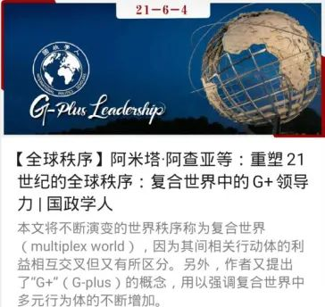
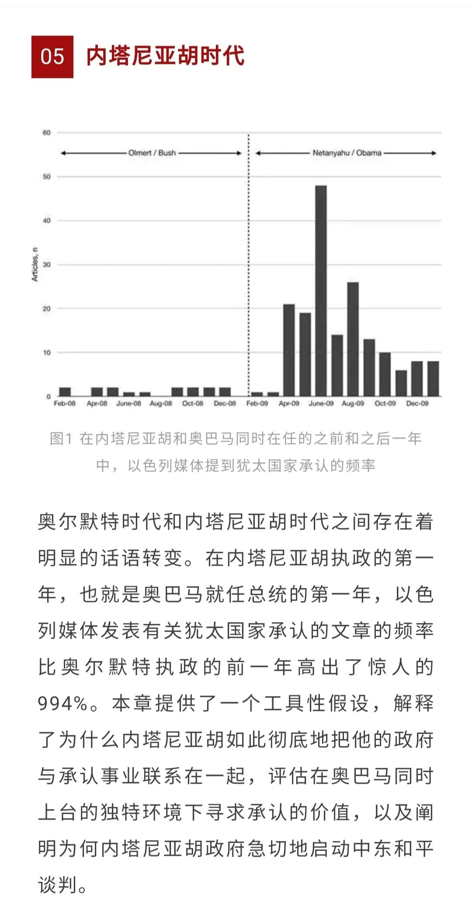
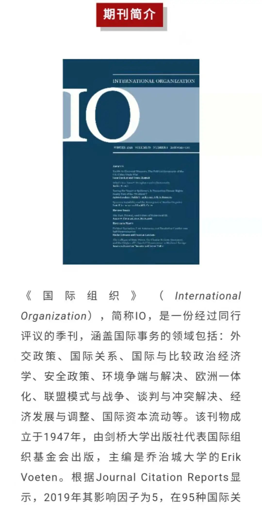
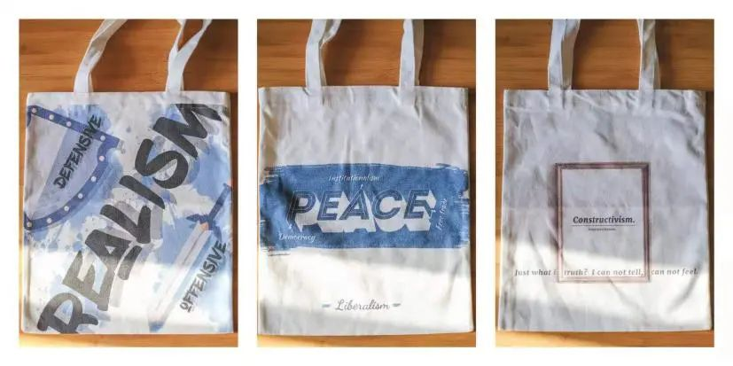

收录于合集
平台简介
国政学人是中国国际关系与政治学学界知名学术平台，专注相关领域的知识传播与学术研究事业。国政学人团队汇集了上百位来自海内外名校的青年学人。读者定位高水平研究者，影响受众已覆盖国内相关领域所有科研院所，并向国际拓展。目前，国政学人以高质量外文编译为特色，并逐渐成长为中国国际关系学界规模与影响力最大的编译平台。目前，国政学人已形成集微信公众号、微博、B站为一体的新媒体矩阵，累计关注达数十万人。此外，我们先后与知名学术出版社、媒体、智库建立了友好合作关系，为团队成员创造了无限的信息、资源和机遇。
想要到如此优秀的国政学人实习吗？想要结识更多来自不同高校的小伙伴并收获一份愉快的实习经历吗？如果想，那还等什么？国政学人宣传部纳新等你来！
我们是谁？
国政学人宣传部是国政学人平台的重要组成部分之一，主要负责在微信、微博、B站等新媒体平台发布国政学人团队的学术资讯，致力于运用融媒体技术传播国际政治前沿内容，打造及时、高端的专业性学术公益平台。
我们在做什么？
01
微信运营小分队
  
编译部的小伙伴们完成文章编译之后怎么办？
严谨规范的排版？
Yes！
精致美观的封面？
Yes！
微信运营小分队的小伙伴们负责每天将文章排版后呈现给大家。
02
微博运营小分队
想要在微博冲浪时体验当博主的快乐吗？快来康康我们的微博平台，平台由微博运营小分队的伙伴们生产传播原创内容，致力于通过各种趣味形式为喜爱国际关系的老少粉丝们科普国关知识，我们现已开拓的栏目包括“国小政词典”、“国政小资讯”、“国政书籍小简介”和“国政小提问”等。
“国小政词典” 为大家科普国关领域的专业名词，通过词语小卡片和投票等形式对相关名词进行讲解。
“国政书籍小简介” 每周带来一本国关领域的名著，并对书籍的核心观点、所属流派和各方评价等进行总结整理。
**
**
“国政小提问” 每周提出一个国关领域的小问题，并以选择题的形式呈现。既能科普知识，又能与国政学子们愉快互动。
****
“国政小咨资讯” 每周摘编一则外文报道，该栏目是了解国外媒体态度看法的窗口。
还有更多栏目创新等你一起来探索！
03
B站视频创作小分队
想要体验视频创作生产的过程嘛？快来和我们一起把脑海中的奇思妙想变成有趣的科普视频吧，这里有充满趣味的国关小科普，也有为国政学子们答疑解惑的经验视频，更少不了兼具学术性和观赏性的时事分析。
《蚕食我国领土？印度在痴心妄想！》 成为幸运鹅，视频被金灿荣老师的公众号转发，引起了广泛讨论。
04
文创小分队
在文创小分队，大家化身灵魂画手，共同创作国政学人独家的文创周边，将各种脑洞变为现实，喜欢绘画、热爱设计、擅长PS的你一定能在这里找到志同道合的小伙伴。

加入我们，你能获得
（一） 名家近距离交流
国政学人团队曾策划主办名家学术讲坛、名家访谈（包括名家专访，学者巅峰对话等栏目）、国政学人青年讲坛等活动，邀请国政领域的名家前辈、青年学者为嘉宾进行学术讲座、学术访谈，与团队同学们进行亲切的交流。
1、名家学术讲坛

2、名家访谈（包括名家专访，学者巅峰对话等栏目）
【巅峰访谈】唐世平教授专访秦亚青教授：从“实证主义者”到“建构主义者”
【巅峰访谈】唐世平教授访谈阎学通教授：科学理论无国界，成不了“中国学派”

平台成员正在采访唐世平教授
采访者与王逸舟教授合影
3、国政学人青年讲坛

（二） 团队成员“学习经验互助计划”
打造优秀同辈间交流平台、朋辈交流会、一对一导师咨询等多形式内部交流活动，认识更多志同道合的小伙伴，分享个人学习与发展过程中的经验和收获、为团队成员的学业规划与升学就业提供指导和帮助。

（三）赠书福利
国政学人与多家出版机构建立了合作关系，出版社会定期为团队提供专业最新书籍，团队成员将均有机会获得。
【新著推荐】中国首套国际政治理论丛书全新改版（内含秦亚青、潘忠岐、宋伟新书福利）
（四）实习证明
在平台实习表现良好者可获得实习证明，更有机会获得平台推荐资格，到知名单位进行联合实习。
注：本平台为志愿性的公益组织，暂无法提供固定报酬，请在报名前悉知。
招募条件
1.熟悉微信公众平台运营，熟练掌握新媒体编辑工具（以掌握秀米图文排版编辑器为优先，目前没有掌握也不用担心，后期团队将会提供系统培训）；
2. 熟悉社交账号平台的运营，如：B站、微博等；
3. 擅长视频、音频制作剪辑，会使用PS、PR等图片和视频处理软件；
4. 有周边文创产品设计、开发的兴趣与经验；
5. 有一定的创新能力，可以参与策划宣传推广方案；
6. 有一定的宽松时间，能够接受宣传工作的定期排班与临时任务安排。
我们欢迎积极向上，热衷学习各位小伙伴，且不限制年级、专业。进入宣传部后可以选择两个或以上感兴趣的小分队，满足一项及以上条件的小伙伴们快来加入我们吧！
报名方式
1、 报名： 请将个人简历及个人新媒体作品（推送链接、海报、视频剪辑作品等均可）以压缩包形式发送至国政学人专属邮箱。（邮箱地址： guozhengxueren@163.com ），报名截止日期： 2021年7月30日（星期五）晚22：00
2、 入选： 通过简历审核进行筛选。入选成功者我们将以邮件告知，并邀请你参与后续培训工作。
文案：黄晨蕊、韩心蕊
排版：韩心蕊
美编：方引弓
期待你的加入！